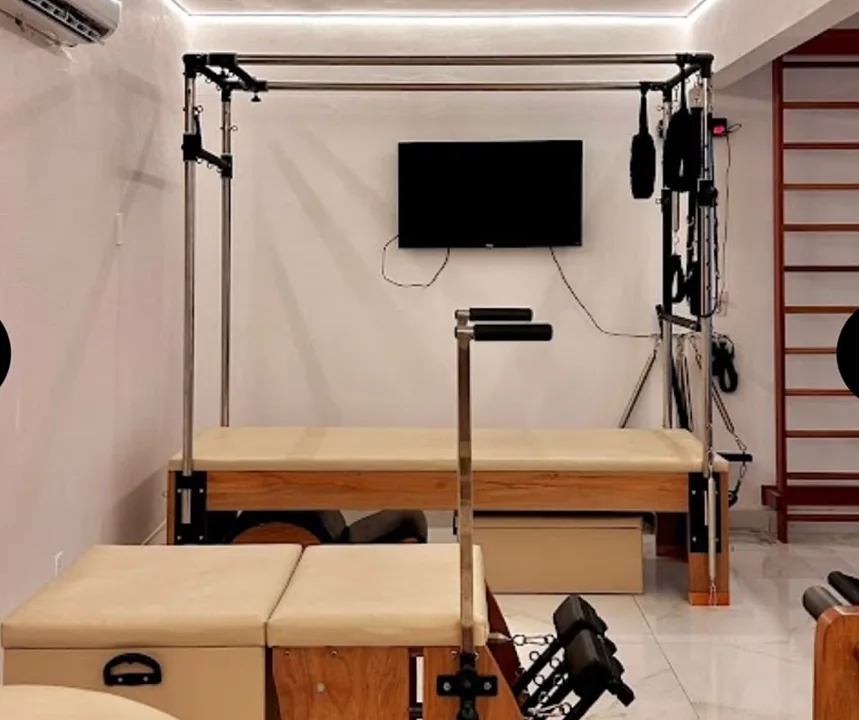
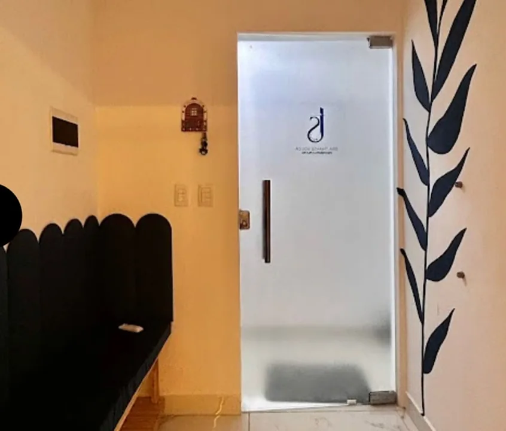
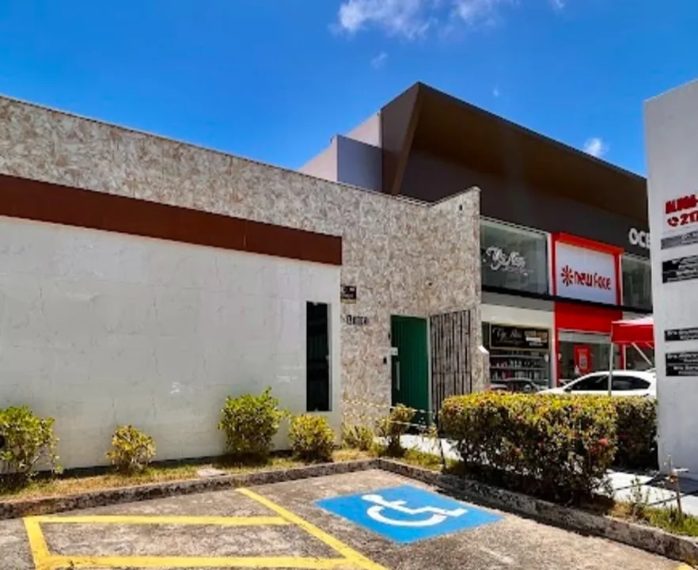

Pilates
Nosso espaço reúne aparelhos para a prática de Pilates. Fale com a gente para conhecer as aulas e os horários disponíveis.
Saber sobre Pilates ↗João Pessoa · Manaíra
Pilates e Fisioterapia em Manaíra. Conheça nosso studio, tire suas dúvidas e encontre espaço para o movimento na sua rotina.
Quero conhecer o studio
Conheça nossos atendimentos. A primeira conversa ajuda a esclarecer o que você procura e como podemos orientar seu próximo passo.
Nosso espaço reúne aparelhos para a prática de Pilates. Fale com a gente para conhecer as aulas e os horários disponíveis.
Saber sobre Pilates ↗Exercícios de Pilates no solo também fazem parte das nossas modalidades. Converse com a equipe para saber mais.
Conhecer a modalidade ↗Conte o que você está buscando e tire suas dúvidas sobre o atendimento de Fisioterapia no nosso studio.
Falar sobre atendimento ↗Um endereço para dedicar atenção ao seu movimento. Estamos na Avenida João Câncio da Silva, com Pilates e Fisioterapia no mesmo studio.
Combine uma visita com a gente ↗

Não precisa chegar com todas as respostas. Fale com o studio para conhecer as opções de atendimento.
Envie sua mensagem e diga se quer conhecer o Pilates ou a Fisioterapia.
Consulte a disponibilidade, os valores e as informações para o atendimento.
Confirme com a nossa equipe o horário e os detalhes da sua visita.
Fale com a gente pelo WhatsApp para conhecer as aulas e os atendimentos.
Falar com o Studio Thayse SouzaAv. João Câncio da Silva, 1191
Manaíra · João Pessoa, PB
(83) 98727-4292
Ver localização no mapa ↗Consulte os horários disponíveis pelo WhatsApp.
Temos Pilates, Mat Pilates e Fisioterapia. Converse com a gente sobre o que procura e tire suas dúvidas sobre cada atendimento.
Envie uma mensagem pelo WhatsApp. Nossa equipe informa as opções e a disponibilidade atual.
Estamos na Avenida João Câncio da Silva, 1191, em Manaíra, João Pessoa. Confirme seu atendimento antes de vir.